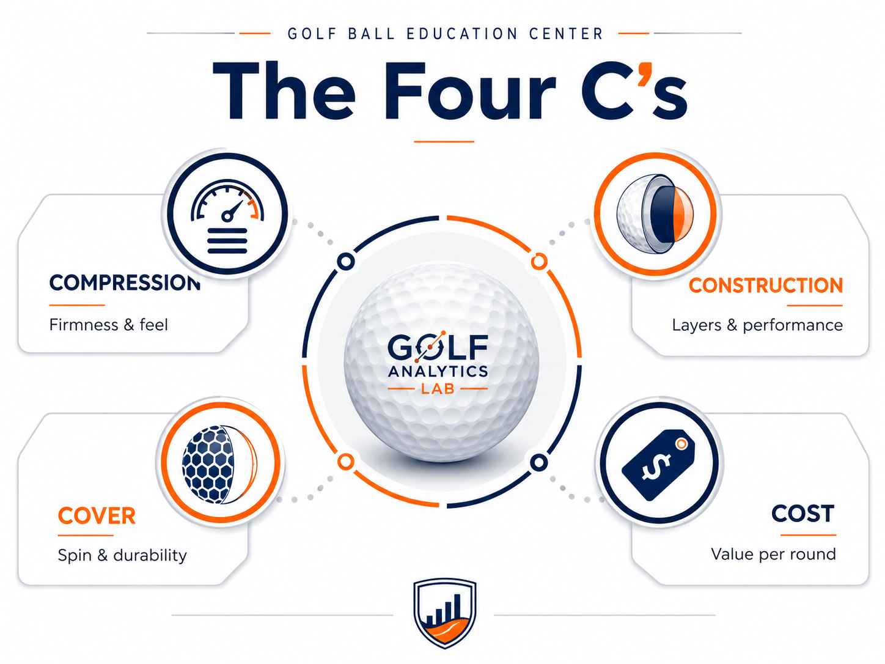

A practical comparison framework
The Four C’s organize golf-ball information into four understandable categories: Compression, Construction, Cover, and Cost. No single C identifies the best ball. The value comes from seeing how they work together.

CompressionThe Atti compression scale, firmness, deflection, typical ranges, and the limits of swing-speed matching.
ConstructionThe core, mantle, and cover system used to manage energy transfer, launch, spin, feel, and durability.
CoverThe evolution from leather and balata to ionomer, cast urethane, and thermoplastic urethane.
CostCost per round, durability, lost-ball rate, product consistency, recycled options, and performance value.
How to use the Four C’s
Begin with the performance characteristics and tradeoffs that matter to your game. Then use the Four C’s to understand why different products may deliver those outcomes. Finish by testing a short list under real playing conditions.